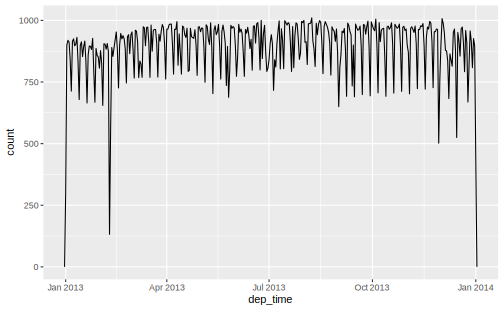
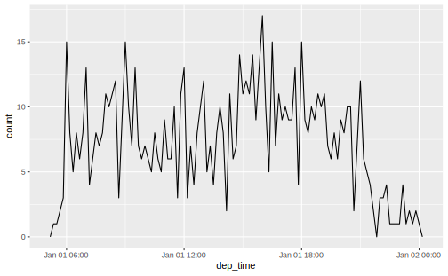

4.1 Creating dates and times
There are generally 3 types of date / time data :
- date: Often specified by year, month and day. Tibble prints this as
<date>
- time：A time within a day, specified by hour, minutes and seconds. Tibble prints this as
<time>
- date-time: is a date plus a time. Tibbles print this as
<dttm>. Elsewhere in R these are calledPOSIXct
如果能够满足需要，就应该使用最简单的数据类型。这意味着只要能够使用日期型数据，那么就不应该使用日期时间型数据。
要想得到当前日期或当前时期时间，可以使用 today() 或 now() ：
除此之外，以下 3 种方法也可以创建日期或时间：
- 通过字符串创建
- 通过日期时间的各个成分创建
- 通过现有的日期时间对象创建
4.1.1 From strings
日期时间数据经常用字符串表示。在事先知晓各个组成部分顺序的前提下，通过 lubridate 中的一些辅助函数，可以轻松将字符串转换为日期时间格式。因为要想使用函数，需要先确定年、月、日在日期数据中的顺序，然后按照同样的顺讯排列字母 y、m、d，这样就可以组成能够创建日期格式的 lubridate 函数名称，例如：
ymd("2017-03-01")
#> [1] "2017-03-01"
mdy("January 1st,2017")
#> [1] "2017-01-01"
dmy("31-Jan-2017")
#> [1] "2017-01-31"这些函数也可以接受不带引号的数值，这是创建单个时期时间对象的最简单的方法。在筛选日期时间数据时，就可以使用这种方法：
ymd() 和其他类似函数可以创建日期数据。想要创建日期时间型数据，可以在后面加一个下划线，以及h、m、s之中的一个或多个字母（依然要遵循顺序），这样就可以得到解析日期时间数据的函数了：
ymd_hms("2017-01-31 20:11:59")
#> [1] "2017-01-31 20:11:59 UTC"
mdy_hm("01/31/2017 08:01")
#> [1] "2017-01-31 08:01:00 UTC"如果用类似函数尝试解析包含无效内容的字符串，将会返回 NA ：
通过添加一个时区参数，可以将一个时期强制转换为日期时间：
4.1.2 From individual components
To create a date/time from this sort of input, usemake_date() for dates, or make_datetime() for date-times. Input vectors are silently recycled:
make_datetime(year = 1999, month = 12, day = 22, sec = c(10, 11))
#> [1] "1999-12-22 00:00:10 UTC" "1999-12-22 00:00:11 UTC"This is useful when individual components of data / time is seprated across multiple columns, as in flights:
flights %>%
select(year, month, day, hour, minute) %>%
mutate(departure = make_datetime(year = year,
month = month,
day = day,
hour = hour,
min = minute))
#> # A tibble: 336,776 x 6
#> year month day hour minute departure
#> <int> <int> <int> <dbl> <dbl> <dttm>
#> 1 2013 1 1 5 15 2013-01-01 05:15:00
#> 2 2013 1 1 5 29 2013-01-01 05:29:00
#> 3 2013 1 1 5 40 2013-01-01 05:40:00
#> 4 2013 1 1 5 45 2013-01-01 05:45:00
#> 5 2013 1 1 6 0 2013-01-01 06:00:00
#> 6 2013 1 1 5 58 2013-01-01 05:58:00
#> # ... with 336,770 more rowssec in make_datetime() is unassigned so it defualts to base level 0. This is also how make_date() workds
make_date(year = 2020, day = 20)
#> [1] "2020-01-20"
make_date(month = 12, day = 20) # year starts in 1970
#> [1] "1970-12-20"flights 中 hour 和 time 均是航班起飞时间的预计值。为了算出实际起飞、到达时间，我们需要使用 dep_time 和 arr_time 这两个变量，不过，它们同时包括了小时和分钟数：
flights %>% select(dep_time,
arr_time,
sched_dep_time,
sched_arr_time)
#> # A tibble: 336,776 x 4
#> dep_time arr_time sched_dep_time sched_arr_time
#> <int> <int> <int> <int>
#> 1 517 830 515 819
#> 2 533 850 529 830
#> 3 542 923 540 850
#> 4 544 1004 545 1022
#> 5 554 812 600 837
#> 6 554 740 558 728
#> # ... with 336,770 more rows为了创建出表示实际出发和到达时间的日期时间型数据，我们首先编写一个函数以使make_datetime函数适应dep_time和arr_time这种比较奇怪的表示方式，思想是使用模运算将小时成分与分钟成分分离。一旦创建了日期时间变量，我们就在本章剩余部分使用这些变量进行讨论：
make_datetime_100 <- function(year, month, day, time) {
hour = time %/% 100
minute = time %% 100
make_datetime(year, month, day, hour, minute)
}
(flights_dt <- flights %>%
filter(!is.na(dep_time), !is.na(arr_time)) %>%
mutate(
dep_time = make_datetime_100(year, month, day, dep_time),
arr_time = make_datetime_100(year, month, day, arr_time),
sched_dep_time = make_datetime_100(year, month, day, sched_dep_time),
sched_arr_time = make_datetime_100(year, month, day, sched_arr_time)) %>%
select(origin,dest,ends_with("delay"), ends_with("time"))
)
#> # A tibble: 328,063 x 9
#> origin dest dep_delay arr_delay dep_time sched_dep_time
#> <chr> <chr> <dbl> <dbl> <dttm> <dttm>
#> 1 EWR IAH 2 11 2013-01-01 05:17:00 2013-01-01 05:15:00
#> 2 LGA IAH 4 20 2013-01-01 05:33:00 2013-01-01 05:29:00
#> 3 JFK MIA 2 33 2013-01-01 05:42:00 2013-01-01 05:40:00
#> 4 JFK BQN -1 -18 2013-01-01 05:44:00 2013-01-01 05:45:00
#> 5 LGA ATL -6 -25 2013-01-01 05:54:00 2013-01-01 06:00:00
#> 6 EWR ORD -4 12 2013-01-01 05:54:00 2013-01-01 05:58:00
#> # ... with 328,057 more rows, and 3 more variables: arr_time <dttm>,
#> # sched_arr_time <dttm>, air_time <dbl>我们还可以使用这些数据做出一年间出发时间或某一天内出发时间的可视化分布（精确到分钟）。注意在直方图的分箱宽度中，日期时间数据的单位是秒，而日期数据则是天
## 一年内起飞时间的分布
flights_dt %>%
ggplot() +
geom_freqpoly(aes(x = dep_time),binwidth = 86400) ## 86000秒= 1天
## 1月1日起飞时间的分布
flights_dt %>%
filter(dep_time < ymd(20130102)) %>%
ggplot(aes(x=dep_time))+
geom_freqpoly(binwidth = 600) ## 600秒 = 10分钟
4.1.3 From other times
You may want to switch between a date-time and a date. That’s the job of as_datetime() and as_date():
Sometimes you’ll get date/times as numeric offsets from the “Unix Epoch”, 1970-01-01. If the offset is in seconds, use as_datetime(); if it’s in days, use as_date().
4.1.4 Exercises
If returns NA and throws a warning: